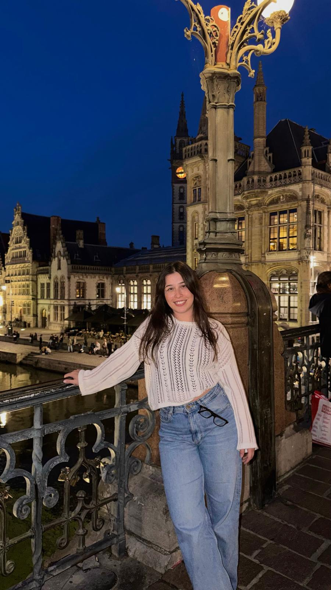

Hi, I'm Arife Nur Çakır.
I was born on 14 October 2001 in Dalaman, Muğla, Türkiye. I'm a Geomatics Engineering student at Hacettepe University. I enjoy discovering new places, exploring different cultures, and seeing the world from different perspectives.
This website brings together the places I've visited, the places that are special to me, and the destinations I hope to explore.
Tools I've Learned Along the Way
Throughout my studies, I've been learning and working with different software tools that help me bring what I learn into practice. From creating maps and analysing spatial data to working on technical drawings and engineering projects, each tool has been part of my learning journey. Here are some of the tools I've come across and used during my education.
| Tool | Logo | What I Use It For |
|---|---|---|
| QGIS |
|
Spatial analysis and mapping |
| Python |
|
Programming and image processing |
| PostgreSQL / PostGIS |
|
Spatial database management |
| Netcad |
|
Road design and engineering applications |
| AutoCAD |
|
Technical drawing and drafting |